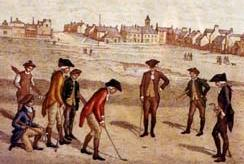
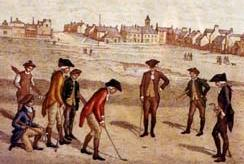

La historia del Golf
Desde sus inicios hasta la llegada a la Argentina
 

El golf es un deporte cuyo objetivo es introducir una bola en los hoyos que están distribuidos en el campo con el menor número de golpes, utilizando para cada golpe uno de entre un conjunto de palos ligeramente diferentes entre sí, ya que la cabeza del palo tiene ángulos distintos, al igual que las varillas tienen longitudes diferentes. A menor número de grados de inclinación, mayor longitud de la varilla y, por lo tanto, más distancia. Como máximo se pueden llevar catorce palos y como mínimo cinco palos.

Según los historiadores, el golf se originó en los Países Bajos, pero en la Edad Antigua, entre los romanos era popular un juego en el que se utilizaba un palo curvo y una bola hecha con plumas, que puede haber sido la inspiración de este deporte. Sin embargo, según los registros, el juego que hoy conocemos fue inventado por los escoceses entre el siglo XIV y el XV. Este deporte llegó a ser tan popular en Escocia que el parlamento escocés debió dictar una ley que prohibía este juego para evitar que la gente dedicara más tiempo a esta actividad que a la práctica de tiro con arco, que representaba una necesidad militar. De todos modos, los escoceses no prestaron atención a estas disposiciones y a principios del siglo XVI, el rey Jacobo IV de Escocia admitió el juego del golf. Las primeras asociaciones de golf fueron creadas en el siglo XVIII. Así, se establecieron la Honourable Company of Edinburgh Golfers en 1744, la St. Andrews Society of Golfers en 1754 (que tomó su nombre actual en 1834), el Royal and Ancient Golf Club of St. Andrews y el Royal Blackheath en 1766.

Los paises de Europa no fueron los únicos que desarrollaron este deporte. El golf llegó a los paises tanto de América del norte y del sur. La historia del golf en la Argentina está íntimamente ligada a la de los primeros inmigrantes británicos llegados al país para la construcción del ferrocarril, a fines del siglo XIX. De a poco, la alta sociedad porteña se fue interesando por este deporte, lo que hizo que en 1905 Carlos Alfredo Tornquist creara el Golf Club Argentino, con la ayuda de los ex presidentes Julio Argentino Roca y Bartolomé Mitre.